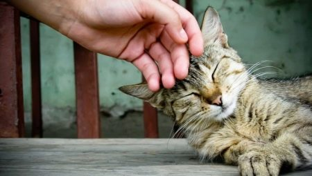
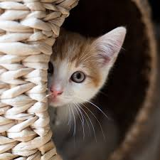

Prima pisica

Pisicuţa mea, Kiki, este o maidaneză frumuşică. Am găsit-o pe strada din faţa casei mele şi mi-a fost milă de ea, motiv pentru care mi-am dorit să o aduc acasă. Am întrebat-o pe mama dacă o pot păstra, iar ea mi-a spus că da, dar a adăugat o condiţie: să am grijă de ea. După ce mi-am luat angajamentul că o voi îngriji, am dus-o în casă. Pisicuţa mică a fost la început foarte timidă. Nu a avut curaj să se mişte din colţul în care am aşezat-o. După ce am hrănit-o şi am mângâiat-o puţin, pisicuţa a prins curaj şi a început să exploreze camera. Ulterior a dat târcoale întregii case, semn că începea să se obişnuiască cu noua ei locuinţă.
De când am adus-o acasă au trecut câteva săptămâni. Pisicuţa pare a fi foarte fericită. De câte ori mă întorc de la şcoală pisicuţa mă aşteaptă cuminte lângă uşă, iar apoi îmi sare veselă în braţe. E foarte jucăuşă şi prietenoasă. Părinţii mei o îndrăgesc şi ei foarte mult şi sunt foarte bucuroşi că am primit pisicuţa printre noi. Deoarece toată lumea a acceptat pisicuţa şi o îndrăgeşte foarte mult, pot spune că este un membru al familie noastre.
A doua pisica

Pisicuţa mea, Miki, este o maidaneză frumuşică. Am găsit-o pe strada din faţa casei mele şi mi-a fost milă de ea, motiv pentru care mi-am dorit să o aduc acasă. Am întrebat-o pe mama dacă o pot păstra, iar ea mi-a spus că da, dar a adăugat o condiţie: să am grijă de ea. După ce mi-am luat angajamentul că o voi îngriji, am dus-o în casă. Pisicuţa mică a fost la început foarte timidă. Nu a avut curaj să se mişte din colţul în care am aşezat-o. După ce am hrănit-o şi am mângâiat-o puţin, pisicuţa a prins curaj şi a început să exploreze camera. Ulterior a dat târcoale întregii case, semn că începea să se obişnuiască cu noua ei locuinţă.
De când am adus-o acasă au trecut câteva săptămâni. Pisicuţa pare a fi foarte fericită. De câte ori mă întorc de la şcoală pisicuţa mă aşteaptă cuminte lângă uşă, iar apoi îmi sare veselă în braţe. E foarte jucăuşă şi prietenoasă. Părinţii mei o îndrăgesc şi ei foarte mult şi sunt foarte bucuroşi că am primit pisicuţa printre noi. Deoarece toată lumea a acceptat pisicuţa şi o îndrăgeşte foarte mult, pot spune că este un membru al familie noastre.